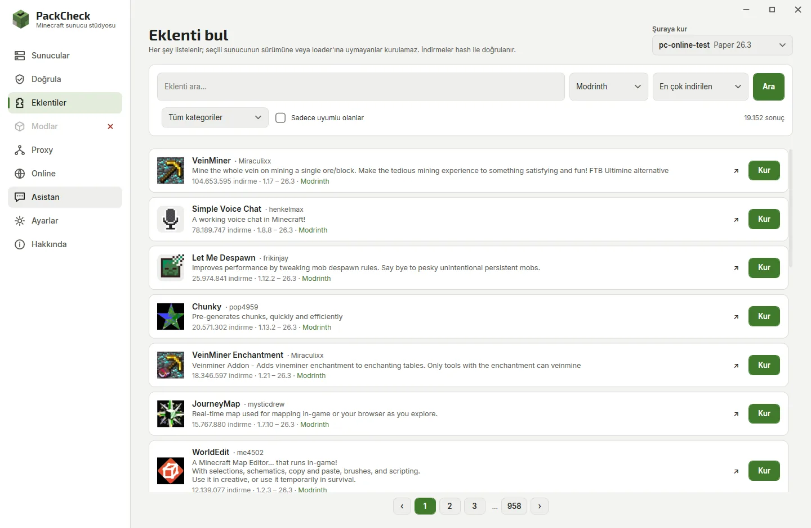
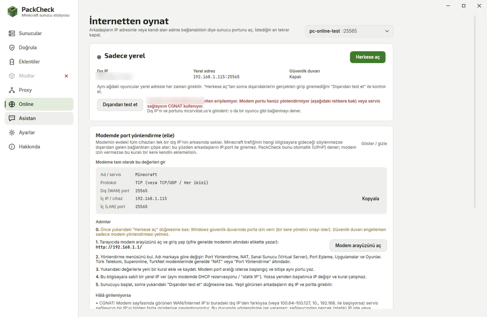
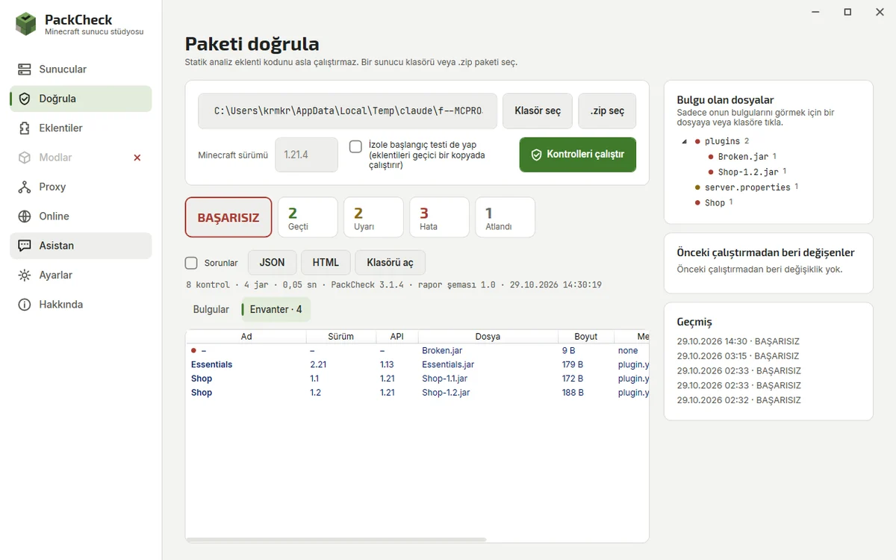

Everything in one window
Pick a part of the app to see it.
A server in a few clicks
Start from a profile and change only what you care about.
- Survival, modded, creative, minigames, hardcore or low-end profiles
- RAM from 1 to 32 GB, CPU core limit
- Game rules, free port and the right Java chosen for you

See how it is doing
Health at a glance, details when you need them.
- TPS, CPU, RAM and ping with history
- Automation: scheduled restarts and backups, crash restarts, idle stop
- Console with search and clickable player names
- Files, backups and a code editor that checks configs

Only what fits your server
Browse Modrinth, Hangar and CurseForge by category.
- Incompatible items explain why
- Full project details before you install
- Update buttons for installed plugins and mods

Friends can actually join
One button for the firewall and router, and a plain answer when the router says no.
- Step-by-step forwarding guide with your exact values
- Test from outside, like a friend would connect
- Your own domain or a free DuckDNS name

Problems before players see them
Checks every jar and config without running plugin code.
- Missing dependencies and version mismatches
- Duplicates, corrupt jars, client-only mods
- Evidence and a suggested fix for each finding
